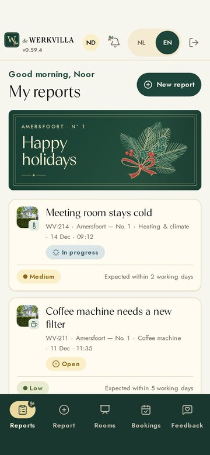
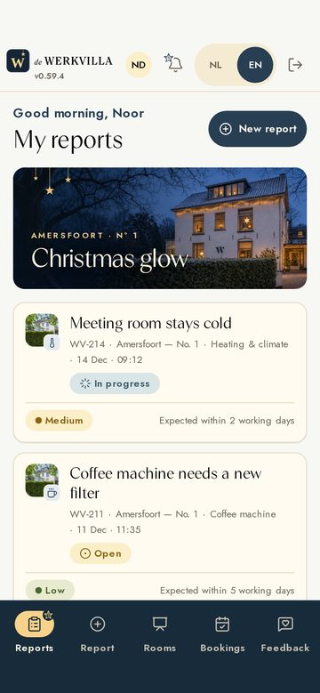
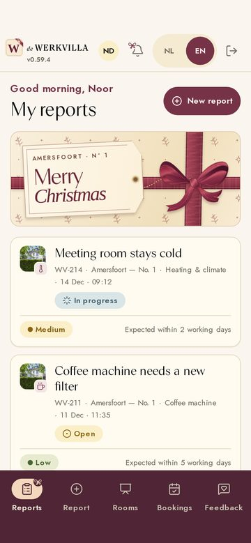
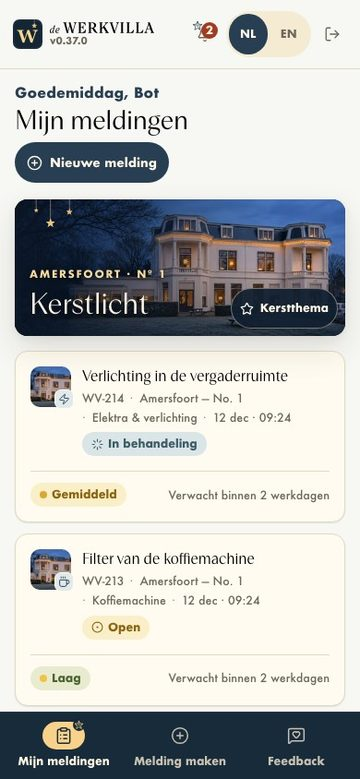

Preview for Martine
Four ideas for giving the Werkvilla tenant app a festive touch this December. Each one changes only the look of the home screen (and, for three of them, the app icon); everything tenants use day to day stays exactly the same.
Tap a design to see it on a phone and on a computer.

A traditional Christmas card in deep evergreen.
View design →
The villa on a winter evening, with warm windows.
View design →
The most festive: a cranberry gift bow.
View design →
Each villa’s own photo as a winter evening scene.
View design →